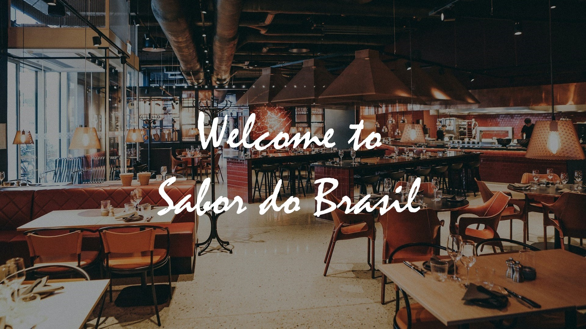
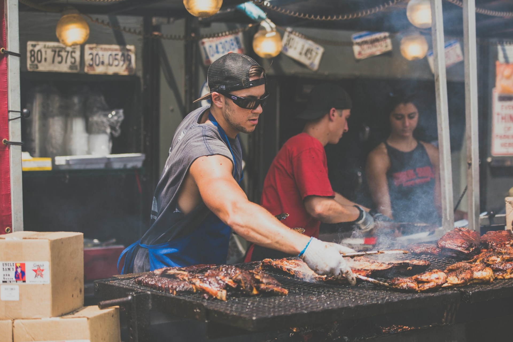

Sabor do Brasil em Atenas
"What is a churrascaria? What is Rodízio?"
Churrascaria is a distinct South American rotisserie, and it originates with the gaúchos in the south of Brasil. These nomads were brave and unruly, and roasted their dinners over the fire under the night sky. Think of them like Brazilian cowboys. A churrascaria is a place where meat is cooked in the churrasco style, which is basically the Portuguese word for "barbecue". Churrasco features a variety of meats including but certainly not limited to pork, sausage, chicken, and beef. A classic dish is picanha: a specific cut of beef that was popularized in Brazil and later adopted in Portugal.

Rodízio refers to the style of service, kind of like what you might think of a buffet as. Most churrascarias serve their food rodízio style: waiters (garçons) while go table to table with a skewer of one of the meats being served. If you would like a portion, they will carve you off some. Also included is a buffet of salad, bread, and other things that you might like to accompany your meat for dinner.

About Us
Sabor do Brasil is where the vibrant tapestry of Brazilian flavors comes alive in every bite. Founded by Athens local and Brasil native Dr. Katia Maxwell, Sabor do Brasil is a culinary ode to her deep-rooted love for Brazilian cuisine. Inspired by the bustling streets of Rio de Janeiro and the savory traditions of churrascarias, Dr. Maxwell set out to create a dining experience that encapsulates the diverse essence of Brazil. With a goal to share the warmth, hospitality, and rich culinary heritage of her other homeland, Dr. Maxwell crafted a menu that harmonizes the spirited street food of lunchtime with the indulgent rodizio feast of dinner. At Sabor do Brasil, we invite you to embark on a culinary journey that mirrors the heart and soul of Brazil, where each dish is a celebration of culture and the joy of shared moments around the table.